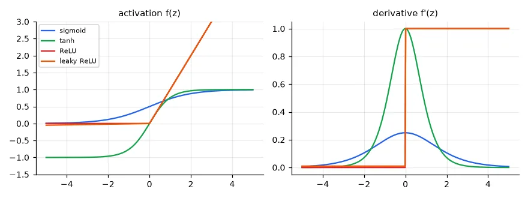
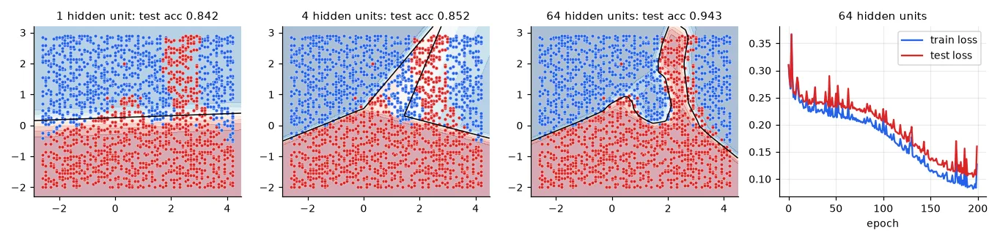

From logistic regression to a network#
Logistic regression (lesson 04) is a single neuron: a weighted sum of the inputs followed by a non-linear function. Its boundary is a straight line. A multilayer perceptron (MLP) stacks neurons: a hidden layer of \(H\) neurons each computes its own feature of the input, and an output neuron does logistic regression on those features:
The network learns the features and the classifier together. The function \(f\) — the activation — is essential: without it, two linear layers collapse into one linear layer, and nothing is gained.
Activation functions and their derivatives#
Training uses the derivative of the activation (we'll see exactly where in a moment), so its shape matters as much as the function's:
ACT = {
"sigmoid": (lambda z: 1 / (1 + np.exp(-z)), lambda z: (s := 1 / (1 + np.exp(-z))) * (1 - s)),
"tanh": (np.tanh, lambda z: 1 - np.tanh(z) ** 2),
"ReLU": (lambda z: np.maximum(z, 0), lambda z: (z > 0).astype(float)),
"leaky ReLU": (lambda z: np.where(z > 0, z, 0.01 * z), lambda z: np.where(z > 0, 1, 0.01)),
}
z = np.linspace(-5, 5, 11)
for name, (f, df) in ACT.items():
print(f"{name:10s} max derivative {df(np.linspace(-6, 6, 1001)).max():.2f} | f'(z) at z = -5, 0, 5: "
f"{df(np.array([-5.0, 0.01, 5.0])).round(3)}")
sigmoid max derivative 0.25 | f'(z) at z = -5, 0, 5: [0.007 0.25 0.007]
tanh max derivative 1.00 | f'(z) at z = -5, 0, 5: [0. 1. 0.]
ReLU max derivative 1.00 | f'(z) at z = -5, 0, 5: [0. 1. 1.]
leaky ReLU max derivative 1.00 | f'(z) at z = -5, 0, 5: [0.01 1. 1. ]

- Sigmoid — squashes to (0, 1). Its derivative is at most 0.25 and vanishes when the neuron saturates. Still the right choice for a binary output.
- tanh — a centred sigmoid with range (−1, 1); derivative up to 1, but it saturates too.
- ReLU, \(\max(0, z)\) — cheap, does not saturate for positive inputs. A neuron whose input is always negative, though, gets zero gradient forever (a "dead" ReLU).
- Leaky ReLU — keeps a small slope (0.01) for negative inputs so no neuron dies completely. GELU and Swish are smooth variants used in modern architectures.
Why depth needs non-saturating activations#
The gradient that reaches the first layer is a product of one derivative per layer (the chain rule). With sigmoids each factor is at most 0.25:
# Backpropagation multiplies one derivative per layer. With sigmoids each factor is at most 0.25.
for depth in (2, 5, 10, 20):
print(f"{depth:2d} sigmoid layers: gradient scaled by at most 0.25^{depth} = {0.25 ** depth:.1e}")
2 sigmoid layers: gradient scaled by at most 0.25^2 = 6.2e-02
5 sigmoid layers: gradient scaled by at most 0.25^5 = 9.8e-04
10 sigmoid layers: gradient scaled by at most 0.25^10 = 9.5e-07
20 sigmoid layers: gradient scaled by at most 0.25^20 = 9.1e-13
This is the vanishing gradient problem: the first layers of a deep sigmoid network barely learn. The opposite — factors above 1 compounding — makes gradients explode. ReLU (derivative exactly 1 where active), careful initialisation, normalisation layers and residual connections (lesson 15) are the cures that made deep learning possible.
The data#
The lab's 2-D mixture dataset: two classes from Gaussian mixtures that no straight line can separate.
train = np.loadtxt(U.path("mixtures/mixtureexampleTrain.csv"))
test = np.loadtxt(U.path("mixtures/mixtureexampleTest.csv"))
X, y = train[:, :2], (train[:, 2] > 0).astype(float) # (1759, 2) float64, labels -1/+1 -> 0/1
Xt, yt = test[:, :2], (test[:, 2] > 0).astype(float) # (5272, 2)
print("train", X.shape, "test", Xt.shape, "| positives: %.1f%%" % (100 * y.mean()))
train (1759, 2) test (5272, 2) | positives: 53.4%
The network, forward and backward#
Forward pass: compute the prediction, keeping the intermediate values. Backward pass: apply the chain rule from the loss back to every parameter, reusing those values. This is all backpropagation is — the chain rule, organised so that each intermediate gradient is computed once.
class MLP:
"""2 -> H (ReLU) -> 1 (sigmoid), trained with binary cross-entropy. Plain NumPy."""
def __init__(self, n_in, n_hidden, rng):
# He initialisation: keeps the variance of the activations stable through ReLU layers
self.W1 = rng.normal(0, np.sqrt(2 / n_in), (n_in, n_hidden)) # (2, H)
self.b1 = np.zeros(n_hidden) # (H,)
self.W2 = rng.normal(0, np.sqrt(1 / n_hidden), (n_hidden, 1)) # (H, 1)
self.b2 = np.zeros(1)
def params(self):
return [self.W1, self.b1, self.W2, self.b2]
def forward(self, X):
self.X = X
self.z1 = X @ self.W1 + self.b1 # (n, H) pre-activations
self.h = np.maximum(self.z1, 0) # (n, H) hidden activations
z2 = self.h @ self.W2 + self.b2 # (n, 1)
self.p = 1 / (1 + np.exp(-z2[:, 0])) # (n,) P(y = 1)
return self.p
def loss(self, y):
eps = 1e-12
return -np.mean(y * np.log(self.p + eps) + (1 - y) * np.log(1 - self.p + eps))
def backward(self, y):
"""Chain rule, from the output back to the input. Returns the gradients in params() order."""
n = len(y)
dz2 = (self.p - y)[:, None] / n # (n, 1) dL/dz2: sigmoid + cross-entropy simplify
dW2 = self.h.T @ dz2 # (H, 1)
db2 = dz2.sum(0)
dh = dz2 @ self.W2.T # (n, H) back through the second layer
dz1 = dh * (self.z1 > 0) # (n, H) back through ReLU: gate the gradient
dW1 = self.X.T @ dz1 # (2, H)
db1 = dz1.sum(0)
return [dW1, db1, dW2, db2]
Read backward from top to bottom, following the shapes:
- With a sigmoid output and cross-entropy loss, \(\partial L/\partial z_2 = p - y\) — the same "prediction minus label" as logistic regression (divided by \(n\) because the loss is a mean).
- \(z_2 = \mathbf{h}W_2 + b_2\) is linear: \(\partial L/\partial W_2 = \mathbf{h}^\top\,\partial L/\partial z_2\), and the gradient flowing back into the hidden layer is \(\partial L/\partial z_2\, W_2^\top\).
- Through ReLU the gradient passes unchanged where \(z_1 > 0\) and is blocked where \(z_1 \le 0\) — multiplication by \(f'(z_1)\), here a 0/1 mask.
- \(z_1 = XW_1 + b_1\) is linear again: \(\partial L/\partial W_1 = X^\top\,\partial L/\partial z_1\).
Every layer of every network follows this pattern: gradient with respect to my output in, gradient with respect to my parameters and my input out.
parameters: 257 (2x64 + 64 + 64x1 + 1)
Prove it: the gradient check#
A backpropagation bug rarely crashes: the network just trains badly. Compare a few analytic gradients with finite differences, as in lesson 03:
Xs, ys = X[:20], y[:20]
net.forward(Xs)
analytic = net.backward(ys)
h = 1e-6
worst = 0
for P, G in zip(net.params(), analytic):
for idx in [tuple(np.random.randint(s) for s in P.shape) for _ in range(5)]:
old = P[idx]
P[idx] = old + h
net.forward(Xs)
lp = net.loss(ys)
P[idx] = old - h
net.forward(Xs)
lm = net.loss(ys)
P[idx] = old
num = (lp - lm) / (2 * h)
worst = max(worst, abs(num - G[idx]) / max(1e-8, abs(num) + abs(G[idx])))
print("gradient check: largest relative difference %.1e" % worst)
gradient check: largest relative difference 1.1e-07
Relative differences around 1e-7 mean the derivation is right; a bug typically gives 1e-1 or more.
Training with mini-batch SGD#
Instead of the full gradient (lesson 02), take a step after each mini-batch of 32 samples, reshuffling every epoch (one pass over the data). Each step is noisier but 55 times cheaper, and the noise even helps to escape poor regions.
def train_mlp(n_hidden, epochs=200, lr=0.1, batch=32, seed=0):
rng = np.random.default_rng(seed)
net = MLP(2, n_hidden, rng)
hist = []
for ep in range(epochs):
order = rng.permutation(len(y)) # reshuffle every epoch
for i in range(0, len(y), batch):
idx = order[i:i + batch]
net.forward(X[idx])
for P, G in zip(net.params(), net.backward(y[idx])):
P -= lr * G # in-place SGD step
net.forward(X)
tr_loss, tr_acc = net.loss(y), np.mean((net.p > 0.5) == y)
net.forward(Xt)
hist.append((tr_loss, tr_acc, net.loss(yt), np.mean((net.p > 0.5) == yt)))
return net, np.array(hist)
for H in (1, 4, 64):
net, hist = train_mlp(H)
print(f"hidden units {H:2d}: train acc {hist[-1, 1]:.3f}, test acc {hist[-1, 3]:.3f}, test loss {hist[-1, 2]:.3f}")
hidden units 1: train acc 0.848, test acc 0.842, test loss 0.362
hidden units 4: train acc 0.860, test acc 0.852, test loss 0.245
hidden units 64: train acc 0.949, test acc 0.943, test loss 0.160

The pictures show what hidden units are. With one unit the boundary is a line — logistic regression. Each ReLU unit contributes one "fold" along a line; with 4 units the boundary is a polygon of a few straight pieces; with 64 it can bend around the red tongue. A network with one hidden layer can approximate any continuous function given enough units (the universal approximation theorem); deeper networks do it with far fewer units.
The loss curve is jumpy, and still going down after 200 epochs: SGD with a constant learning rate keeps bouncing around the minimum. Learning-rate schedules and adaptive optimisers (lesson 12) smooth this out.
Exercises#
- Add a second hidden layer (2 → 32 → 32 → 1). Write its
backwardand run the gradient check before training. - Replace ReLU by sigmoid in the hidden layer (and its derivative in
backward). How many epochs does it need to reach the same test accuracy? - Initialise all weights to zero. What happens to the 64 hidden units, and why can they never become different?